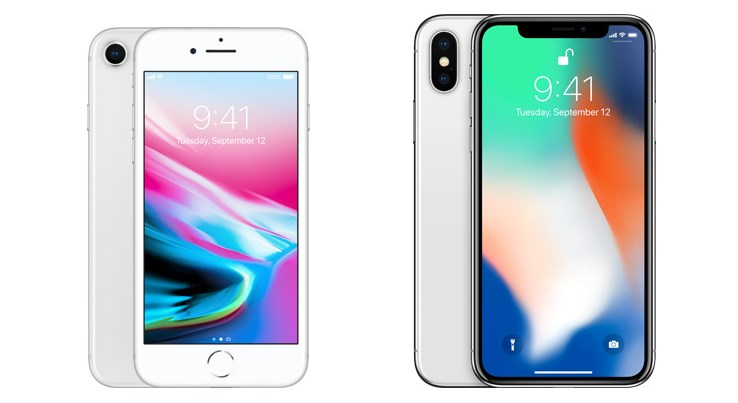

Source: Christian Zibrey. How to type Apple logo on your devices. 2018. idownloadblog.com. (https://www.idownloadblog.com/2018/07/03/howto-type-apple-logo-symbol/)
During 2016, Apple the creater of the iPhone, created two different phones. On March 31 the first generation of the iPhone SE was released. The iPhone SE was very simular to the Iphone 6S. The only thing that was different was that the iPhone SE had the body of the iPhone 5S which came out in September 20, 2013.The original operating systemnwas iOS 9.3. You could get storage from 16GB to 128GB. The dimensions of this iphone is H: 4.84 in W: 2.31 in D:.30 in in The memory was 2GB RAM. The system on the chip is Apple A9. This chip was first in the iPhone 6S and 6S Plus. This iPhone was discontinuened. In September 2018. After the iPhone SE,the iPhone 7 and iPhone 7 Plus was released on September 16. The iPhone 7 had a simular design to the iPhone 6. this iPhone has no headphone jack, improved water resistance and upgreaded A10 Fusion processor. Aplle says that the iPhone 7 will be able to stay underwater for 30 minutes in a depth of 1 meter. When this iPhone was released, Apple also released a new color named Jet Black. Apple has ugraded the camera on the iPhone 7. They have upgrade the lens of the camera to let more light in. The lens is also paired with TrueTone flash with four LEDs. The front camera also had a upgrade. 2016 was a good year for Apple with releasing two different phones and making upgrade with every deivice.
Source: Gordon Kelly. Choosing between the iPhone 7 (left) vs iPhone SE (right) is not as simple as you might think. Image credit: Apple. 2016. forbes.com. (https://www.forbes.com/sites/gordonkelly/2016/11/05/iphone-7-vs-iphone-se-whats-the-difference/?sh=934a4a837172)
In the year 2017 the creaters of the iPhone came out with two new iPhones. The first iPhone that came out the iPhone 8 and the iPhone 8 Plus. The iPhone 8 and iPhone 8 Plus where released on September 22 2017. This iPhone has a glass body. This is also the first iPhone that allows you to charge your phone wireless. The iPhone 7 has a faster All processor. This chip is one of the most powerful and smartest chip in a smartphone at the time. It featers a CPU design that has two permormance cores and four efficiency cores. On the iPhone 8 Plus Apple has ugraded the camera. This camera is wider then the cameras have been in the past. The next iPhone that was released was the iPhone X also known as the iPhone 10. This was on of the biggest chance in the iPhone that apple has made. With the iPhone X they changed the screen so there is no more white along the border of your phone. However Alpple changed something about the iPhone that some people did not like and that was they removed the home button. The iPhone X is all glass just like the 8. This iPhone also has face ID which means you can unlock and download games by holding your phone infront of your face. The battery life has two more hours then the iPhone 7. The iPhone X was very different in exterior design then we have every seen for Apple. People around the world were excited for this iPhone decause of the new design. The iPhone X was a big step for Apple.
Source: Joy Taylor. iPhone 8 vs iPhone 10- Display Differences. 2020. imobie.com. (https://www.imobie.com/support/difference-between-iphone-8-and-x.htm)
Two differnet iPhones came out in 2018. The first iPhone that was released in 2018 was the iPhone XS and iPhone XS Max. The iPhone XS screen is ether 5.8 and 6.5 inch. You can up to 512GB. A new color was released with this phone. The color was a gold color. The iPhone XS has a edge to edge diplay. It also has a A12 Bionoc chip. This chip is simular to the A11 chip in which it has two performace cores and four efficiency cores, howere this chip has a four-core GPU whitch is fivety times faster then the A11. It also has an updated Neural Engine. The starting amount for tjis phone is 999 dollors so 1099 dollors. The second iPhone thatwas released was the Iphone XR. This iPhone has a battery life that last of 25 hours. It was released to the public in October 26. Just like the iPhone XS the iPhone XR has a A12 Bionic chip. You can get a storage amount of 64GB, 128GB or 256GB. This iPhone also has a True Tone and a wide color display. It has a glass body with an aluminum frame. There are 6 different color options for tjis iPhone. The starting prise for the Iphone XR is 499 dollors. This means that the iPhone XR is one of the most affordable iPhones today. For the prise the iPhone XR is better then the iPhone Xs and iPhone Xs Max. The iPhone XR has a battery life 1.5 longer the the iPhone 8 Plus.
Source: Gordon Kelly. iPhone XS (left) Vs iPhone XR (right). 2018. forbes. com. (https://www.forbes.com/sites/gordonkelly/2018/09/19/apple-iphone-xs-vs-iphone-xr-whats-the-difference-upgrade/?sh=45b1c06c5984)
In the year of 2019 the iPhone 11, iPhone 11 Pro and the iPhone 11 Pro Max was released. The price of the iPhone 11 is 699 dollors. The price of the iPhone 11 Pro is 999 dollors. The price of the iPhone 11 Pro Max is 1,099 dollors. The camera has a wide and ultra wide lense. The front facing camera is now updated to 12 MP.

Source: Cameron Faulkner. The Verge. 2019. imobie.com. (https://www.imobie.com/support/difference-between-iphone-8-and-x.htm)
In 2020 four iPhones where released. The iPhone 12 , iPhone 12 mini, iPhone 12 Pro and iPhone Pro Max. The iPhone 12 and the iPhone 12 mini have an A12 chip. This chip is the first 5nm chip. Just like the A11 and A12 chips this chip has two preformance cores and four efficiency chips. The A14 chip offers forty persent higher CPU performance then the A12 chip.The starting price for the iPhone 12 mini is 699 dollors and the starting price for the iPhone 12 is 799 dollors. Apple has now introduced its Night Mode to all cameras. On the iPhone 12 there is no glass on the front. It is a materiall called ceramic shield. With the iPhone 12 Pro you can get 128GB storage, 256GB storage, or 512GB storage. The hight of this phone is 5.78 inchers, the width is 2.82 inches, and the depth is .29 inch. The screen display is 6.1 inches (diagonal). With the iPhone 12 Pro Max you can get 128GB storage, 256GB storage or 512GB storage. The height for this phone is 6.33 inches, the width is 3.07 inches and the depth is .29 inch. The screen display is 6.7 inches (diagonal). Both models have True Tone display and wide color display. They also have face ID. These iPhones are the lastest to come out today. The past five years for Apple have been great years. The year 2020 has been the year that Apple has realsted more iPhones then in the past five years. Who knows what is next for the year 2021.
Source: Arpit. iPhone 12 vs iPhone 12 mini vs iPhone 12 Pro vs iPhone 12 Pro Max. 2020. mysmartprice.com. (https://www.mysmartprice.com/geariPhone 12 vs iPhone 12 /iphone-12-vs-iphone-12-mini-vs-iphone-12-pro-vs-iphone-12-pro-max/)